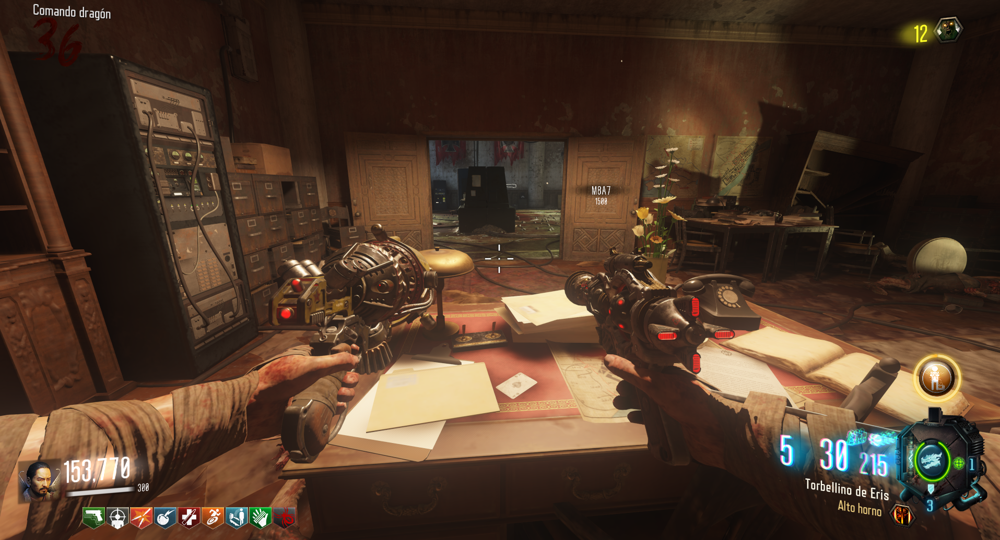
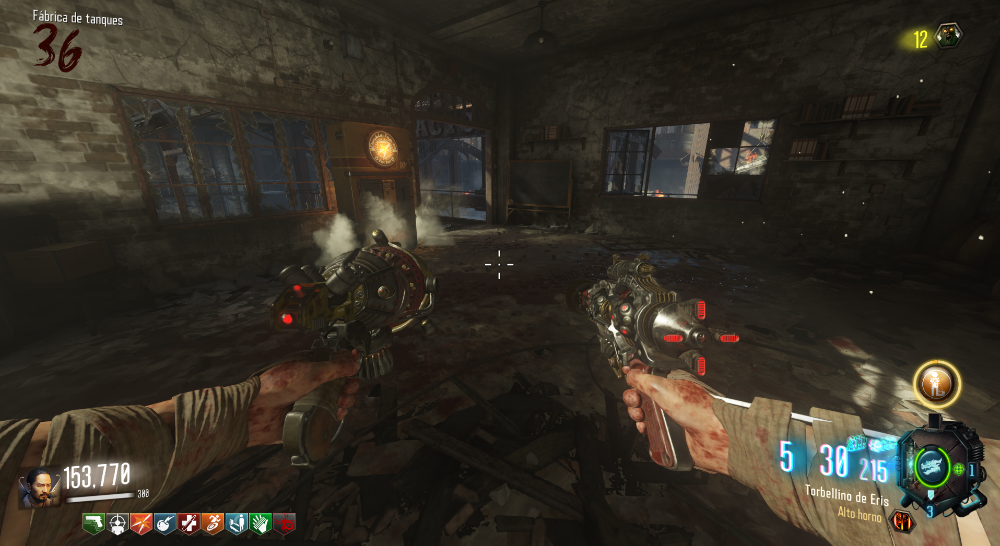
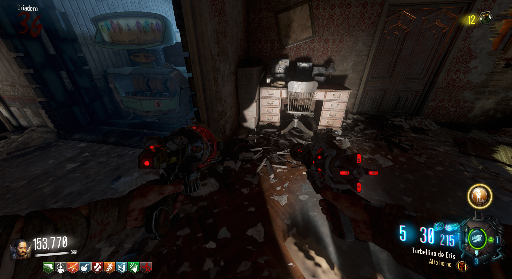

Carta 1: En la sala de la izquierda subiendo a Dragon Command, sobre la mesa.

Carta 2: En Tank Factory, en la sala del Doble-Tap justo en la esquina inferior izquierda de la pizarra.

Carta 3: Cerca del P-a-P, entre las páginas de un libro.
